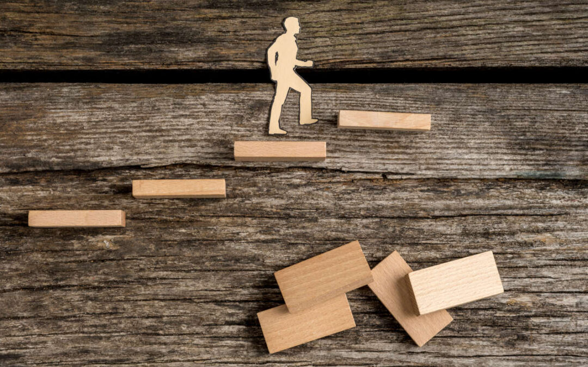
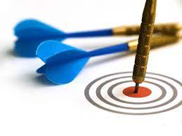
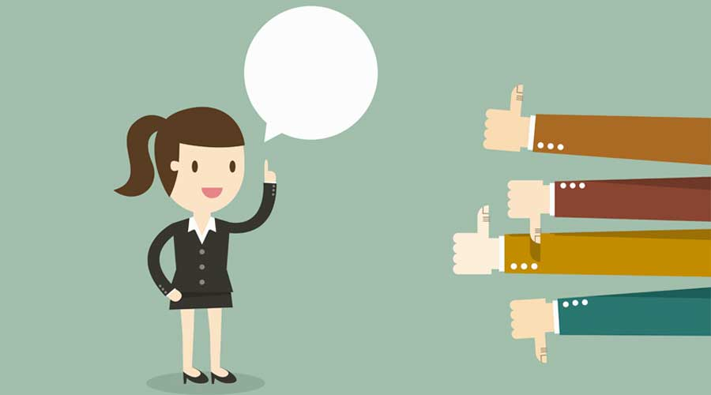

¿Qué es el desarrollo personal?
El desarrollo personal es un viaje interior que abarca diversas dimensiones de la vida de un individuo. Este proceso implica la mejora constante de habilidades, conocimientos y actitudes con el fin de alcanzar un estado de bienestar y autorrealización. Se centra en el autoconocimiento, la autenticidad y el crecimiento personal a lo largo del tiempo. Incluye aspectos emocionales, sociales, profesionales y físicos, promoviendo una visión integral de la vida. La toma de decisiones conscientes y la gestión efectiva del tiempo son habilidades clave para avanzar en este camino. La reflexión constante sobre nuestras acciones y valores es esencial para identificar áreas de mejora y establecer metas alineadas con nuestros valores más profundos. El desarrollo personal no solo beneficia al individuo, sino que también puede tener un impacto positivo en su entorno, generando relaciones más saludables y contribuciones significativas a la comunidad. En resumen, el desarrollo personal es un compromiso continuo con el crecimiento y la autenticidad, buscando un equilibrio armonioso en todas las facetas de la vida.
td>Imagen Referencial

Consejos y estrategias para lograr un buen desarrollo personal
El camino hacia un sólido desarrollo personal implica la implementación de estrategias y la adopción de ciertos consejos clave. En primer lugar, es fundamental realizar una autoevaluación constante, reflexionando sobre fortalezas, debilidades y metas personales. Establecer metas claras y alcanzables proporciona una dirección clara para el crecimiento. La búsqueda continua de conocimiento, ya sea a través de la lectura, la educación formal o la interacción con diversas experiencias, nutre el desarrollo intelectual. La gestión eficiente del tiempo permite equilibrar responsabilidades, ocio y actividades de desarrollo personal. Mantener una mentalidad positiva frente a desafíos fomenta la resiliencia y el aprendizaje constante. La atención al bienestar físico y mental es esencial, incorporando hábitos saludables en la rutina diaria. Desarrollar habilidades sociales, salir de la zona de confort y construir relaciones positivas son aspectos cruciales para el crecimiento personal. Finalmente, celebrar los logros, independientemente de su magnitud, refuerza la motivación y contribuye a una autoestima positiva en el camino hacia el desarrollo personal pleno.

Testimonios de personal que lograron un buen desarrollo personal
Steve Jobs, el co-fundador de Apple, es un ejemplo destacado de alguien que logró un notable desarrollo personal. A lo largo de su vida, Jobs enfrentó desafíos significativos, incluyendo su salida de Apple en un momento, pero siempre se esforzó por aprender y crecer. Su capacidad para innovar y su visión futurista transformaron la industria tecnológica. A través de la autoevaluación continua y la perseverancia, Jobs construyó un legado que va más allá de la tecnología, destacando la importancia de la pasión y la creatividad en el desarrollo personal.
Otro ejemplo inspirador es Malala Yousafzai, la activista paquistaní que aboga por la educación de las niñas. A pesar de enfrentar la adversidad y el peligro por su lucha, Malala persistió en su búsqueda de conocimiento y equidad. Su valentía y dedicación la llevaron a convertirse en la persona más joven en recibir el Premio Nobel de la Paz. Su historia destaca la importancia de la educación y la determinación en el desarrollo personal, mostrando cómo una voz individual puede tener un impacto global significativo.
